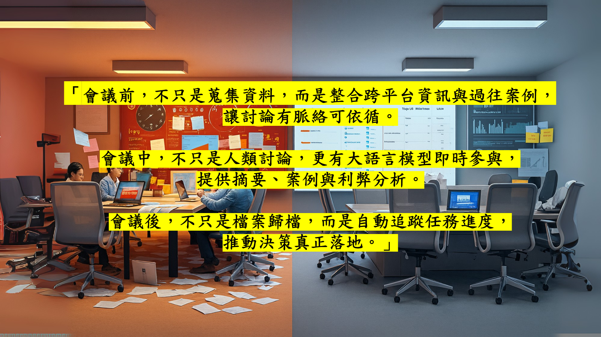
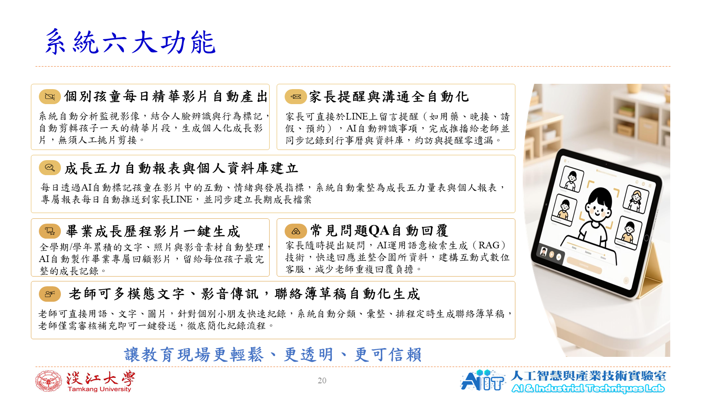
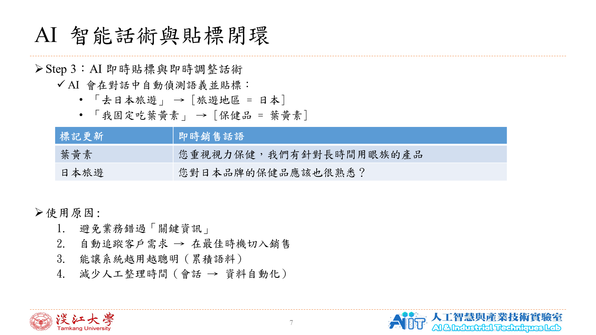

AI Product
Thinking
從痛點、使用者旅程到成效指標，讓技術服務清楚的商業目標。
Available for new opportunities
我是曾子昕，具資訊工程與管理背景的 AI／軟體人才。專注打造三種能真正被使用的系統：智慧會議協作、教育多模態分析、零售對話智能。

SCROLL TO DISCOVER
2024—2026
PROFILE
我相信優秀的 AI 產品不只追求模型表現，更要理解現場流程、降低使用門檻，並讓成果可被衡量。在碩士期間，我持續在教育、企業協作與零售等真實場景中，將 AI 技術轉化為可落地的服務設計。
一起討論合作可能 ↗從痛點、使用者旅程到成效指標，讓技術服務清楚的商業目標。
熟悉 NLP、RAG、電腦視覺與預測模型在真實資料與流程中的應用。
以資料分析、儀表板與自動化串接，建立可追蹤、可持續優化的工作流。
SELECTED WORK
從需求洞察到技術架構，
每一個專案都以可落地為原則。

系統概念圖 / 會議生命週期AIGO 淬煉實戰盃 · 2025 · 競賽佳作
問題資料分散、會議重點難追溯、待辦容易遺漏。
系統整合會前知識、即時摘要與任務／決策辨識。
產出摘要、任務清單、風險提醒與管理儀表板。

系統功能圖 / 不含兒童個資International ICT Awards · 2025 · 教育 AI 組第一名
問題教師紀錄耗時，家長難即時理解孩子的成長。
系統將影像與日常紀錄轉為五力報表與自動化聯絡服務。
產出成長洞察、精華影片與親師溝通流程。

概念流程圖 / 不含客戶資料Industry Collaboration · 2025 · 概念提案
問題客服對話難累積洞察，話術高度依賴個人經驗。
系統以客戶畫像、語意貼標與策略話術形成閉環。
產出讓資料支持後續溝通與營運決策。
RECOGNITION
第 30 屆大專校院資訊應用服務創新競賽
AI 五力智慧幼兒園
第 30 屆大專校院資訊應用服務創新競賽
AI 五力智慧幼兒園
第 30 屆大專校院資訊應用服務創新競賽
AI 五力智慧幼兒園
第 30 屆大專校院資訊應用服務創新競賽
基於 LLM、RAG 與 AI Agent 的會議機器人
全國創意與智慧科技競賽
以 AI 驅動的教育創新實作
智慧創新大賞 · AI 應用類／學生組
從技術整合到實務價值的提案實踐
AIGO 淬煉實戰盃競賽
全域意境感知智慧會議秘書系統
EXPERIENCE & TOOLKIT
2025 — 2026
2024 — 2026
2024 — 2026
SELECTED TOOLKIT
把複雜技術說成人人能採取行動的產品語言。
05 / GET IN TOUCH
© TSENG ZI-XIN
BACK TO TOP ↑